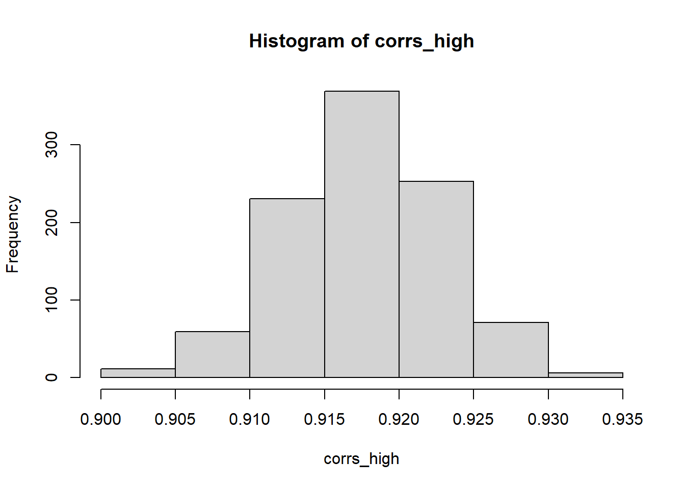

![]()
Here’s a quick post on how to generate correlated random numbers in R inpired by this stack overflow post.
First step is to define a covariance matrix
# Covariance and correlation for standardised variables would be same
# Specifying correlations instead
(cor_mat <- matrix(c(1, 0.3, 0.3, 1), nrow = 2, byrow = T))
## [,1] [,2]
## [1,] 1.0 0.3
## [2,] 0.3 1.0
Next decompose the matrix using Cholesky’s decomposition
(chol_mat <- chol(cor_mat))
## [,1] [,2]
## [1,] 1 0.3000000
## [2,] 0 0.9539392
Generate some random numbers
old_random <- matrix(rnorm(2000), ncol = 2)
Multiply this matrix with the upper triangular matrix from above
new_random <- old_random %*% chol_mat
cor(new_random)
## [,1] [,2]
## [1,] 1.000000 0.299686
## [2,] 0.299686 1.000000
cor(old_random)
## [,1] [,2]
## [1,] 1.0000000 0.0106811
## [2,] 0.0106811 1.0000000
cor(new_random)
## [,1] [,2]
## [1,] 1.000000 0.299686
## [2,] 0.299686 1.000000
Some notes and caveats
- The original random variables need to be as uncorrelated as possible for this to work well.
corrs_high <- c()
for(i in 1:1000){
x <- rnorm(1000)
y <- 2 * x + rnorm(1000)
old_random <- as.matrix(data.frame(x, y))
chol_mat <- chol(matrix(c(1, 0.3, 0.3, 1), ncol = 2, byrow = T))
new_random <- old_random %*% chol_mat
corrs_high <- c(corrs_high, cor(new_random)[1,2])
}
# The specified correlation/covariance structure is not respected
hist(corrs_high)

corrs_low <- c()
for(i in 1:1000){
x <- rnorm(1000)
y <- 0.001 * x + rnorm(1000)
old_random <- as.matrix(data.frame(x, y))
chol_mat <- chol(matrix(c(1, 0.3, 0.3, 1), ncol = 2, byrow = T))
new_random <- old_random %*% chol_mat
corrs_low <- c(corrs_low, cor(new_random)[1,2])
}
# Now the correlation between the two variables is much closer to the specified value
hist(corrs_low)

- Tends to not work results if the original samples (uncorrelated random variables) are from different distributions
x <- rchisq(1000, 2, 3)
y <- rnorm(1000)
old_random <- as.matrix(data.frame(x, y))
chol_mat <- chol(matrix(c(1, 0.3, 0.3, 1), ncol = 2, byrow = T))
new_random <- old_random %*% chol_mat
cor(new_random)
## [,1] [,2]
## [1,] 1.0000000 0.7868328
## [2,] 0.7868328 1.0000000
x <- rchisq(1000, 2, 3)
y <- rchisq(1000, 2, 3)
old_random <- as.matrix(data.frame(x, y))
chol_mat <- chol(matrix(c(1, 0.3, 0.3, 1), ncol = 2, byrow = T))
new_random <- old_random %*% chol_mat
cor(new_random)
## [,1] [,2]
## [1,] 1.0000000 0.2931943
## [2,] 0.2931943 1.0000000
- There is no way to ensure that characteristics of the original distributions are maintained
x <- rchisq(1000, 2, 3)
y <- rchisq(1000, 2, 3)
old_random <- as.matrix(data.frame(x, y))
chol_mat <- chol(matrix(c(1, -0.3, -0.3, 1), ncol = 2, byrow = T))
new_random <- old_random %*% chol_mat
# While the correlation value seems fine
cor(new_random)
## [,1] [,2]
## [1,] 1.0000000 -0.3103062
## [2,] -0.3103062 1.0000000
# There are negative values!
range(new_random)
## [1] -7.828389 28.882035
Or, just use mvtnorm::rmvnorm() 😄
sigma <- matrix(c(4,2,2,3), ncol=2)
cov2cor(sigma) ## Expected correlation
## [,1] [,2]
## [1,] 1.0000000 0.5773503
## [2,] 0.5773503 1.0000000
x <- mvtnorm::rmvnorm(n = 500, mean = c(1,2), sigma = sigma)
cor(x) ## Actual correlation
## [,1] [,2]
## [1,] 1.0000000 0.6057812
## [2,] 0.6057812 1.0000000
Thoughts? Comments? Helpful? Not helpful? Like to see anything else added in here? Let me know!